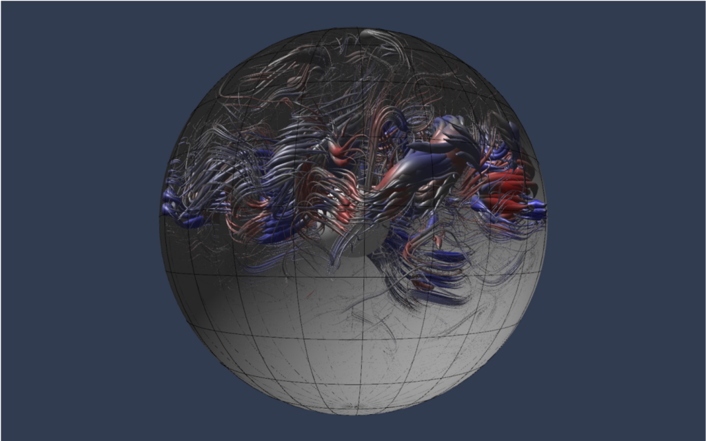

Links
Missions, institutes, departments, and textbooks connected to the research program.

This links page gathers useful external resources for students, collaborators, and visitors. The categories are organized as a curated resource hub for missions, institutes, departments, and teaching.
Ongoing and Future NASA / ESA Planetary Science and Heliophysics Missions
- NASA Juno Mission for giant-planet interior and magnetic-field science at Jupiter
- NASA Europa Clipper Mission for Europa-focused exploration and geophysical context
- ESA JUICE Mission for Jupiter-system and icy-moon geophysics
- NASA TRACERS Mission for magnetometer-enabled heliophysics investigations
Institutes and Departments
- SPACE Institute, UCLA
- Department of Earth, Planetary, and Space Sciences, UCLA
- Isaac Newton Institute for Mathematical Sciences, University of Cambridge
- Department of Physics, Imperial College London
- Department of Earth and Planetary Sciences, Harvard University
- Division of Geological and Planetary Sciences, Caltech
Textbooks
- Kip S. Thorne and Roger D. Blandford, Modern Classical Physics
- Keith Moffatt and Emmanuel Dormy, Self-Exciting Fluid Dynamos
- Peter A. Davidson, Turbulence in Rotating, Stratified and Electrically Conducting Fluids
- Russell M. Kulsrud, Plasma Physics for Astrophysics
These titles help signal the blend of physics, fluid dynamics, and magnetohydrodynamics that shapes the group's research and teaching.